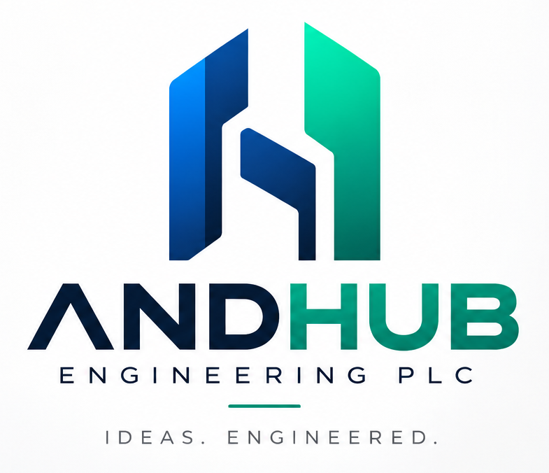
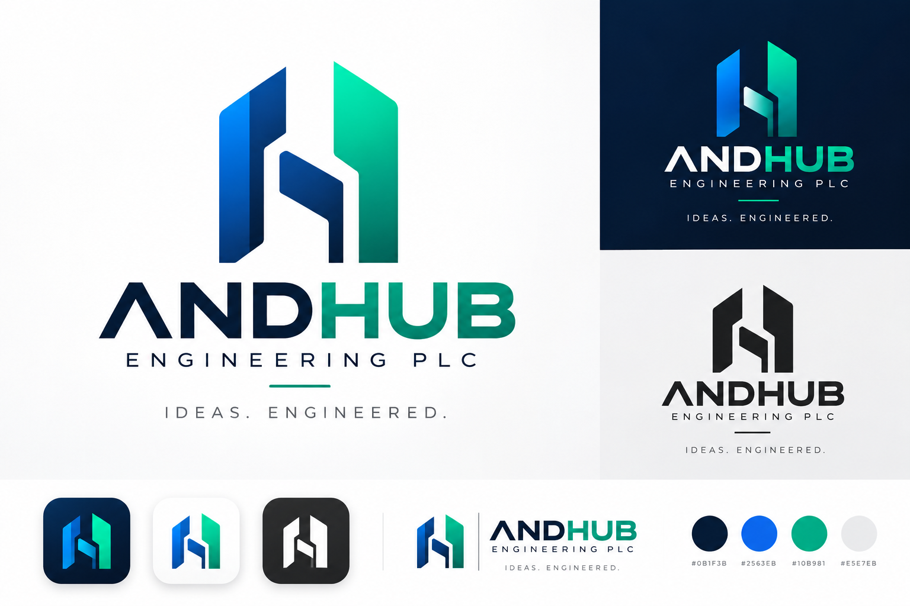
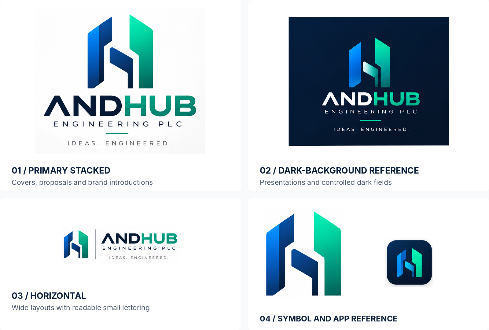
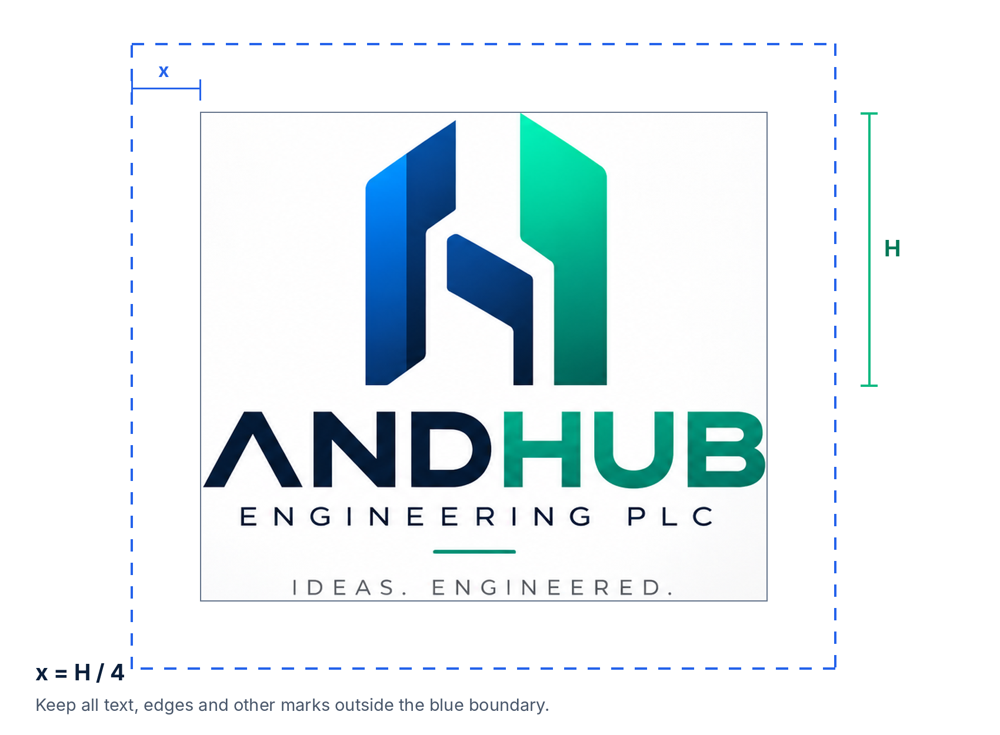
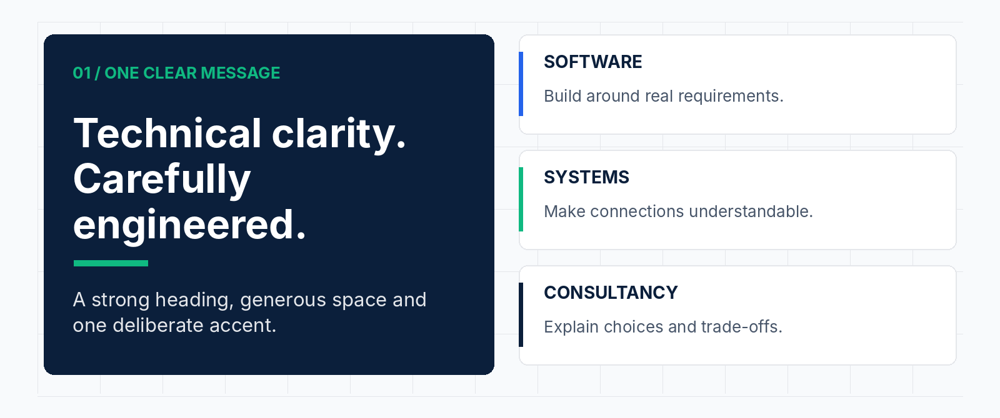
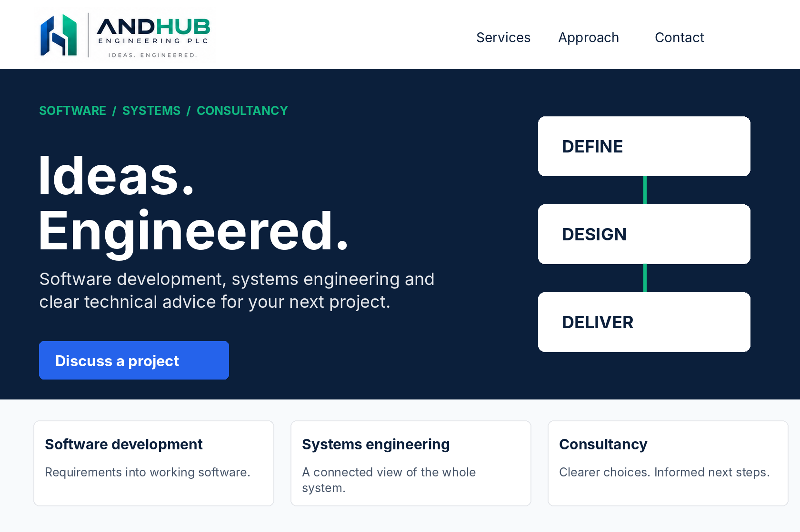
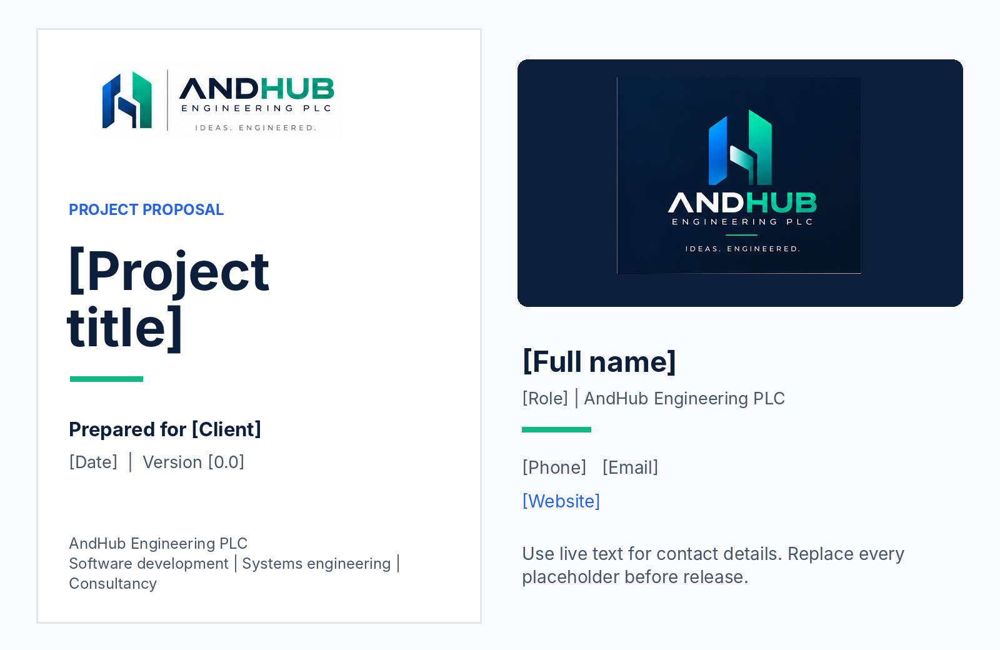
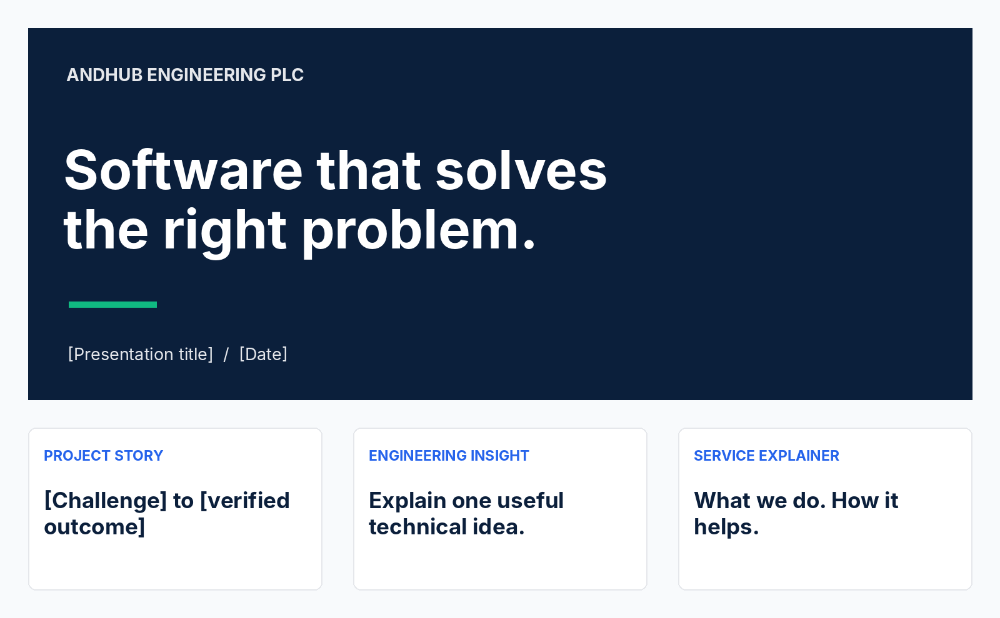

ANDHUB / BRAND SYSTEM
Brand
guidelines
Software development. Systems engineering. Consultancy.

IDEAS. ENGINEERED. A consistent identity for clear thinking, connected systems and practical technology. |
|---|
VERSION 1.0 / 2 NOVEMBER 2026
Prepared for AndHub Engineering PLC. Strategy, usage rules and application examples are proposed standards for adoption. Logo references are drawn from the supplied brand identity board.
02 / START HERE
One identity. A usable system.
This guide translates the supplied logo board into everyday decisions for design, communication and delivery.

Source reference: the original identity board. Its gradients, lighting and backgrounds are presentation treatments, not separately supplied production assets. [1]
Retained from your identity | Defined in this guide |
|---|---|
AndHub Engineering PLC; ANDHUB display wordmark; angular symbol; “Ideas. Engineered.”; four printed HEX labels. | Positioning, voice, typography, clear space, minimum sizes, supporting colors, layout rules and sample applications. |
The input is a single raster image. Original vector geometry, the wordmark typeface and exact gradient stops have not been verified. This guide does not claim to supply print-ready logo masters.
Find what you need | Pages |
|---|---|
Brand foundation and voice | 03–04 |
Logo family, spacing and protection | 05–07 |
Color, accessibility and typography | 08–10 |
Layouts and practical applications | 11–15 |
Production, governance and references | 16–18 |
03 / BRAND FOUNDATION
Engineering, made clear.
Recommended positioning for a software development, systems engineering and consultancy firm.
POSITIONING AndHub Engineering PLC helps organizations turn complex technology needs into practical solutions by connecting software development, systems engineering and clear technical advice. |
|---|
Purpose, mission and vision
Element | Recommended statement |
|---|---|
Purpose | Make complex technology easier to understand, design and put to work. |
Mission | Turn requirements into practical software and well-designed systems through thoughtful engineering and clear advice. |
Vision | Be a trusted partner for organizations building dependable digital capabilities. |
Four principles to demonstrate
Principle | What the audience should experience |
|---|---|
Clarity | Straightforward explanations, understandable scope and visible next steps. |
Rigor | Reasoned decisions, documented assumptions and appropriate validation. |
Collaboration | Listening before proposing; working with both business and technical stakeholders. |
Responsibility | Honest commitments, thoughtful handover and transparent discussion of constraints. |
Audience and brand character
Speak first to project owners, technology decision-makers and teams commissioning technical work. Help procurement and delivery partners understand the scope and approach without needing to decode jargon.
Be precise, composed, practical and approachable. Sound like an engineering partner who can explain the work—not a vendor relying on superlatives.
These statements define an intended position and behavior. They are not claims about certifications, completed projects, customer numbers or current service-level performance.
04 / VERBAL IDENTITY
Clear language. Real substance.
Use one consistent name, a stable service structure and a voice that makes technical work understandable.
Naming and tagline
Use | Rule |
|---|---|
Formal company name | AndHub Engineering PLC. Use on contracts, proposals, invoices and first mentions. |
Short brand name | AndHub. Preserve the capital A and H. Do not write Andhub or And Hub. |
Display wordmark | ANDHUB is the artwork treatment, not the default capitalization for body copy. |
Tagline | Ideas. Engineered. Preserve both full stops. Uppercase is appropriate in the logo lockup. |
Service architecture
Keep the three services under one AndHub identity. Use “Software development,” “Systems engineering” and “Consultancy” as clear headings—not separate logos or competing sub-brands. Explain the actual scope in each engagement; do not imply unconfirmed specialisms.
Tone in practice
Instead of | Prefer |
|---|---|
“Revolutionary, world-class digital solutions.” | “Software designed around your requirements.” |
“We guarantee seamless transformation.” | “We clarify the scope, dependencies and next steps.” |
“Our stack optimizes cross-functional synergies.” | “We help your systems and teams work together.” |
“The best engineering company.” | A specific, verified project result with permission and context. |
Writing rules
Lead with the problem or outcome, then explain the approach. Use active sentences, short paragraphs and concrete verbs such as define, design, build, integrate and advise. Expand unfamiliar abbreviations on first use. Use consistent English spelling within a document.
EVIDENCE RULE Do not invent client names, partner badges, certifications, uptime promises, rankings or performance figures. Support capability claims with approved evidence. |
|---|
05 / LOGO SYSTEM
Choose the right signature.
Use the existing identity consistently before adding new variants.

Reference crops from the supplied board. The illustrations are not transparent or vector logo exports. [1]
Version | Primary use |
|---|---|
Primary stacked | Covers, proposal front pages, corporate introductions and generous vertical spaces. |
Horizontal | Wide layouts, document headers and banners when all included lettering is legible. |
Symbol only | Avatars, app marks and compact interfaces where the company name is established nearby. |
Monochrome / reversed | Single-color production or high-contrast use; create approved black and white vector masters. |
For small navigation bars and signatures, prepare a compact horizontal master containing only the symbol and wordmark. This is a recommended production variant, not a separate file supplied with the original board.
06 / LOGO DIMENSIONS
Give the identity room.
The minimums below are starting standards; verify legibility again once the vector master exists.

H = visible monogram height. Minimum clear space x = H ÷ 4 on all sides of the complete lockup, including its tagline.
Lockup | Screen minimum | Print minimum |
|---|---|---|
Stacked, with tagline | 420 px wide | 85 mm wide |
Stacked, without tagline | 300 px wide | 65 mm wide |
Full horizontal, small lettering included | 480 px wide | 95 mm wide |
Compact horizontal: symbol + wordmark | 180 px wide | 40 mm wide |
Symbol only | 32 px high | 8 mm high |
Screen values are CSS display sizes, not export pixel counts. Keep descriptor and tagline lettering at least 12 px on screen or 7 pt in print; enlarge the mark or switch to a simpler approved lockup whenever this overrides the table.
For 16–24 px favicons, commission and test an optically adjusted micro-symbol. Do not simply shrink the detailed gradient icon. Measure clear space from the visible artwork—not the outer edge of a PNG file.
07 / LOGO PROTECTION
Protect the shape. Keep it clear.
The logo is fixed artwork, not a word typed in the brand font.
Background and color rules
Situation | Use this treatment |
|---|---|
White or very light surface | Approved full-color or navy/black artwork with sufficient visual separation. |
Solid navy or dark surface | Approved reversed or dark-background artwork. Check the darkest symbol edges. |
Photography or busy artwork | Place the logo in a clear, solid-color holding area; do not rely on a shadow. |
One-color reproduction | A true single-color vector master, with the internal negative spaces intact. |
Small or low-detail production | A flat, simplified approved master. Omit the tagline before it becomes unreadable. |
Never change these elements
Do not | Reason |
|---|---|
Stretch, squash, rotate or skew the mark. | Its proportions and upright stance are identifying features. |
Retype ANDHUB or replace the descriptor font. | The original wordmark construction has not been verified. |
Move the symbol parts or redraw its internal gaps. | The connected geometry must remain consistent. |
Add new shadows, bevels, outlines or glows. | Extra effects make everyday reproduction inconsistent. |
Change the color order or introduce unrelated hues. | Recognition depends on the established navy, blue and green relationship. |
Crowd the mark with text, a frame or another logo. | Protect the defined clear space. |
Treat a cropped presentation-board image as a master. | It contains baked-in lighting, backgrounds and limited detail. |
A narrative to use carefully
The interlocking geometry can suggest connection, structure and coordinated engineering. This is a proposed interpretation for brand storytelling—not a verified statement of the original designer’s intent.
CORE VERSUS DISPLAY Retain the supplied gradient treatment for controlled, large-format brand presentation. Prioritize an approved flat master for compact digital use and demanding print processes. |
|---|
08 / COLOR SYSTEM
A disciplined technical palette.
The four core HEX values below are transcribed from the labels on your identity board—not sampled from its gradient artwork. [1]
ANCHOR NAVY #0B1F3B RGB 11 · 31 · 59 | SIGNAL BLUE #2563EB RGB 37 · 99 · 235 | HUB GREEN #10B981 RGB 16 · 185 · 129 | CLOUD GRAY #E5E7EB RGB 229 · 231 · 235 |
|---|
Core color | Assigned role |
|---|---|
Anchor Navy | Primary headings, body emphasis, dark backgrounds and corporate materials. |
Signal Blue | Primary actions, links, interface selection and technical highlights. |
Hub Green | Brand accents, small highlights and positive emphasis—not default white-text buttons. |
Cloud Gray | Subtle dividers and nonessential backgrounds—not body text or required control outlines. |
Supporting neutrals and accessible green
Token | HEX | Purpose |
|---|---|---|
White | #FFFFFF | Main light canvas and text on approved dark fills. |
Surface | #F8FAFC | Secondary page sections and low-emphasis cards. |
Slate | #475569 | Body copy and secondary information on light backgrounds. |
Control gray | #64748B | Visible form boundaries on white; verify other backgrounds. |
Deep green | #047857 | Green text on white or a green button with white text. |
Supporting colors are additions proposed by this guide. Use neutral surfaces generously, navy for structure, blue for action and green selectively for emphasis. Do not force all four core colors into every composition.
GRADIENT AND PRINT A blue-to-green decorative gradient may support large visual areas, but is not a reconstruction of the logo’s original gradient. Do not specify Pantone or fixed CMYK matches from this image; agree the print profile and approve a physical proof. |
|---|
09 / ACCESSIBLE COLOR
Brand color must remain readable.
Use the palette by function, not just appearance. Ratios below are calculated for solid sRGB colors at full opacity.
Foreground / background | Contrast | Normal text |
|---|---|---|
Navy #0B1F3B on white | 16.49 : 1 | Pass |
White on blue #2563EB | 5.17 : 1 | Pass |
Navy #0B1F3B on green #10B981 | 6.50 : 1 | Pass |
White on deep green #047857 | 5.48 : 1 | Pass |
Slate #475569 on white | 7.58 : 1 | Pass |
White on green #10B981 | 2.54 : 1 | Do not use |
Blue #2563EB on navy #0B1F3B | 3.19 : 1 | Do not use for normal text |
Calculated using the WCAG relative-luminance method. Decisions use unrounded values; ratios are displayed to two decimals. “Pass” here means the pair meets the 4.5:1 normal-text contrast threshold, not that a complete interface is accessible. [4]
Text and controls
Target at least 4.5:1 for normal text and 3:1 for large text (at least 18 pt regular or 14 pt bold). The logo exception does not extend to ordinary marketing copy or interface text. [4]
Meaningful control boundaries, state indicators and essential graphics need at least 3:1 against adjacent colors. Cloud Gray on white is only 1.24:1; reserve it for decorative dividers and use a tested darker outline for required form boundaries. [5]
Recommended button combinations
Button | Label | Additional rule |
|---|---|---|
Signal Blue fill | White | Preferred primary action on light surfaces. |
Deep Green fill | White | Alternative green action. |
Hub Green fill | Navy | Add a tested dark boundary on white if the fill is needed to identify the control. |
Underline inline links. Pair status colors with labels or icons; do not communicate success, error or selection through color alone. [6] Check hover, focus, disabled and error states separately, and test text over the least-contrasting point of any gradient.
10 / TYPOGRAPHY
One family. A clear hierarchy.
Proposed typography: Inter Display for headlines and Inter for reading and interface text. These are supporting typefaces, not an identification of the logo font.
Engineering
clarity.
Ideas become useful when people can understand the system, the decisions and the next step.
Family and weights
Use | Typeface | Weight |
|---|---|---|
Headlines and section titles | Inter Display | 600 or 700 |
Body copy, labels and interfaces | Inter | 400, 500 or 600 |
Code and technical identifiers | System monospace | Regular; use only where meaningful |
Office fallback | Arial | Regular or Bold |
Suggested digital scale
Style | Desktop size / line height | Small-screen size / line height |
|---|---|---|
Hero / H1 | 48 / 56 px | 36 / 44 px |
Section / H2 | 32 / 40 px | 28 / 36 px |
Subheading / H3 | 24 / 32 px | 22 / 30 px |
Body and buttons | 16 / 24 px | 16 / 24 px |
Supporting text | 14 / 20 px | 14 / 20 px |
For A4 documents, start with 28–32 pt titles, 10.5–11 pt body copy and 8.5–9 pt captions. Use comfortable paragraph spacing and left-aligned body text. Keep wide letter spacing for short labels—not paragraphs.
Inter is distributed under the SIL Open Font License. Obtain font files from the official Inter distribution and retain the relevant license when distributing font software. Fonts are not bundled with this guide. [3]
11 / GRAPHIC LANGUAGE
Structured, not crowded.
Use the logo’s sense of connection and precision without turning every layout into a technical diagram.

Layout schematic: one main message, aligned modules, restrained accents and clear information hierarchy.
Layout and spacing
Use an 8 px base spacing system for digital work: 8, 16, 24, 32, 48 and 64 px. Align related elements to a shared grid. Keep text blocks short enough to scan and give headings more space above than below. A4 documents should begin with margins around 18–20 mm.
Shapes, lines and icons
Favor clean rectangular modules with restrained corner rounding. Use consistent connectors when they communicate a relationship. Diagonal brand motifs may echo the symbol, but take their angle from the approved vector master rather than approximating its construction.
Use one line-icon family, typically on a 24 px grid with a consistent 2 px stroke. Keep icon size and optical weight consistent. Do not mix decorative 3D icons, emoji and line icons in the same corporate layout.
Images and diagrams
Prefer relevant software screens, real working environments, useful system diagrams and genuine project material with permission. Remove credentials, client data and personal information from screenshots. Avoid construction-site imagery that could misrepresent the company’s stated digital services.
VISUAL RESTRAINT One focal message, one primary action and one dominant accent per composition. Use gradients for atmosphere—not behind small text, charts or detailed diagrams. |
|---|
12 / DIGITAL APPLICATIONS
Let the work lead.
A suggested website direction—not a claim that this website or delivery process already exists.

Illustrative homepage layout using the provided logo reference. “Define / Design / Deliver” is a proposed messaging structure, not an asserted company process.
Website and product rules
Use a compact horizontal logo in navigation once an approved master is prepared. On smaller screens, retain the symbol and a visible company name where practical. Never squeeze the full tagline lockup into a narrow navigation bar.
Use one primary call to action, such as “Discuss a project.” Present the three service areas clearly, then explain scope and approach. Publish project outcomes only after verification and client permission.
Use white or light-surface cards, navy headings and blue primary actions. Keep green for selective brand emphasis or an accessible alternative action. Use real text rather than screenshots of headings and buttons.
Interaction and implementation
Maintain visible keyboard focus and clear error messages. Prefer a white inner focus ring with a navy outer ring across mixed light and dark surfaces, then test the actual components. Respect reduced-motion settings and avoid decorative motion that competes with content.
The companion CSS token file implements this guide’s proposed palette, spacing and basic component styles. It is a starting point—not a completed design system or an accessibility certification.
13 / BUSINESS MATERIALS
Consistent from proposal to handover.
Keep the brand recognizable while leaving room for the client, project and technical content.

Illustrative proposal and contact-card direction. All bracketed details are placeholders; no contact information or client relationship is asserted.
Material | Recommended standard |
|---|---|
Proposal / report | Logo, project title, client, date and version on the cover. Inside: clear headings, numbered pages and a revision record where needed. |
Letterhead / invoice | Formal company name and verified contact and legal details. Keep essential content as live text. |
Business card | Use a common 85 × 55 mm layout as a starting format; confirm trim, bleed and safe area with the printer. |
Email signature | Name, role, company and verified contact fields. Use a compact logo sparingly; keep contact information selectable. |
Technical handover | Use the same document hierarchy for architecture, assumptions, dependencies, testing and agreed next steps. |
For forms and transactional documents, accuracy outranks decoration. Do not place textures behind tables, totals, signatures or technical diagrams.
14 / PRESENTATIONS AND SOCIAL
Teach. Explain. Demonstrate.
Build recognition through useful technical communication—not visual noise or unsupported claims.

Illustrative presentation opening and content categories. The project-story card deliberately requires a verified outcome.
Presentation system
Use a 16:9 working canvas. Start with a navy title slide, then use mainly white content slides. Give each slide one clear point. Start around 32–40 pt for titles and 22–28 pt for body copy, adjusting for the viewing environment. Keep technical diagrams readable from the back of a room.
Social content system
Build recurring formats for engineering insights, service explainers, approved project stories and company updates. Use the same headline position, margins, font hierarchy and small brand signature across the series. Treat dimensions as working canvases and check the destination’s current crop rules before publishing.
Avatars, merchandise and co-branding
Use the symbol—not the full company descriptor or tagline—for small avatars. For embroidery, engraving and one-color items, test a flat master with the supplier. When appearing with a partner logo, preserve both clear spaces, balance optical size and obtain permission.
CONTENT STRUCTURE Name the problem. Explain one useful idea. Show the evidence or next step. End with a relevant invitation rather than exaggerated promises. |
|---|
15 / REUSABLE COPY
Words ready for adaptation.
The following copy stays within the three services you supplied. Review it against the final service scope before publishing.
Company descriptor
Software development, systems engineering and consultancy.
Short company introduction
AndHub Engineering PLC is a software development, systems engineering and consultancy firm. We help organizations turn technology requirements into practical solutions through clear advice and thoughtful engineering.
Website hero
HEADLINE Ideas. Engineered. |
|---|
Supporting copy: Software development, systems engineering and technical consultancy to move your next project from requirements to practical solutions.
Primary action: Discuss a project. Secondary action: Explore our services.
Service descriptions
Service | Suggested copy |
|---|---|
Software development | Software designed around your requirements, users and business context. |
Systems engineering | A structured approach to requirements, architecture and the relationships that make a system work. |
Consultancy | Clear technical advice to evaluate options, understand trade-offs and plan your next steps. |
Email signature template
[Full name]
[Role] | AndHub Engineering PLC
[Phone] | [Email] | [Website]
Ideas. Engineered.
Replace all bracketed placeholders. Add a logo only where it remains readable and does not make the contact information dependent on an image. Do not add invented certifications or legal statements.
16 / PRODUCTION STANDARDS
Build a reliable master library.
The reference board is the starting point. Production assets must be prepared and checked separately.
Required master artwork
Create clean vector paths for the approved symbol and wordmark, preserving proportions, internal gaps and letterforms. Prepare stacked, horizontal, compact horizontal and symbol-only versions. Add full-color, flat-color, black and white variants. Approve each variant before it enters routine use.
Asset | Purpose and requirement |
|---|---|
SVG | Digital logo master with actual paths, a clean viewBox and no embedded raster pretending to be vector. |
Vector PDF | Print and supplier exchange; preserve vectors and agree output settings with the printer. |
Editable source | Maintain the original design file and an outlined-wordmark copy in the controlled brand library. |
Transparent PNG | Digital use where SVG is unsuitable; export at appropriate 1× and 2× sizes from the approved master. |
Micro-symbol / favicon | Prepare and visually test 16, 32 and 48 px versions; retain an approved small-size construction. |
App / avatar assets | Export from the approved symbol using the destination’s required safe areas and file specifications. |
Color and output control
Use the defined sRGB values for digital assets. Do not assign an unverified Pantone number or claim a universal CMYK equivalent. Set print conversions for the intended press, paper and color profile, and sign off a physical proof for important materials.
File naming
AndHub_[Lockup]_[Treatment]_[ColorSpace]_v[Number].[ext]
Example target filename: AndHub_Horizontal_Flat_RGB_v1.svg. This is a naming example, not a file included in this package.
INCLUDED VERSUS REQUIRED Included: a guideline PDF, editable DOCX and CSS starter tokens. Required separately: approved vector logo masters and production exports. Raster illustrations in this guide are not substitutes for those masters. |
|---|
17 / BRAND GOVERNANCE
Make consistency repeatable.
Use a small approval process and a single source of truth rather than ad hoc redesigns.
Recommended ownership
Role | Responsibility |
|---|---|
Designated brand owner | Approves the identity, copy standards, exceptions and new assets. |
Technical reviewer | Checks service descriptions, technical accuracy and capability claims. |
Designer / implementer | Uses current masters and tests legibility, layout and output quality. |
Document owner | Confirms names, dates, contact details, permissions and revision status. |
Release workflow
PREPARE → REVIEW → TEST → APPROVE → ARCHIVE Start from current assets. Check the content. Test the actual display or print size. Obtain approval. Save the released version and retire superseded files. |
|---|
Launch checklist
Check | Release standard |
|---|---|
Identity | Company name, tagline, lockup, colors and clear space are correct. |
Content | No placeholders, unverified claims, unapproved client names or exposed private data. |
Legibility | Small lettering is readable; the appropriate logo variant is used. |
Accessibility | Text, controls, links, focus and status cues have been tested in context. |
Production | The intended output uses correct files, profiles and supplier-approved settings. |
Version control | Approved assets and final files are stored together with a clear owner and version. |
Priorities for rollout
First approve the naming, positioning and supporting typefaces. Next establish vector masters and the shared asset library. Then standardize the website, email signature and proposal template before extending the system to social posts, presentations and merchandise.
Review this guide after major changes to services or identity. Record revisions so the team can distinguish approved decisions from experiments.
18 / REFERENCE
The essentials, in one place.
Keep this page close when briefing designers, developers, writers and print suppliers.
Element | Standard |
|---|---|
Company | AndHub Engineering PLC; AndHub after first mention. |
Tagline | Ideas. Engineered. |
Primary colors | Navy #0B1F3B · Blue #2563EB · Green #10B981 · Gray #E5E7EB |
Typography | Inter Display for headings; Inter for body and interface text. |
Clear space | At least one quarter of the visible monogram height on every side. |
Preferred action | White text on Signal Blue; verify every adjacent color and state. |
Voice | Precise, composed, practical and approachable. |
Core discipline | Use approved artwork and evidence; do not recreate or exaggerate. |
Basis and references
[1] Company-supplied visual source: “AndHub Engineering Brand Identity Board.png,” 1536 × 1024 pixels. Supplies the logo references, displayed tagline and printed palette labels.

[2] Company description supplied in the brief: AndHub Engineering PLC is a software development, system engineering and consultancy company/firm. “Systems engineering” is the recommended editorial service label in this guide.
[3] Inter official project and license. Typeface source and SIL Open Font License information.
[4] W3C: Understanding Contrast (Minimum), SC 1.4.3. Text thresholds, large-text definition and contrast calculations.
[5] W3C: Understanding Non-text Contrast, SC 1.4.11. Contrast for essential controls, states and graphics.
[6] W3C: Understanding Use of Color, SC 1.4.1. Alternatives to color-only communication.
External references checked 2 November 2026. Contrast figures are calculated from the specified HEX values, not measured from the raster board. Application layouts are illustrations; contact details, client names and project results are intentionally not invented.
STATUS OF THIS EDITION Version 1.0 is a complete proposed guideline for AndHub to adopt and maintain. Strategic language, minimum sizes, supporting colors and application rules are recommendations; original logo authorship and production masters have not been independently verified. |
|---|